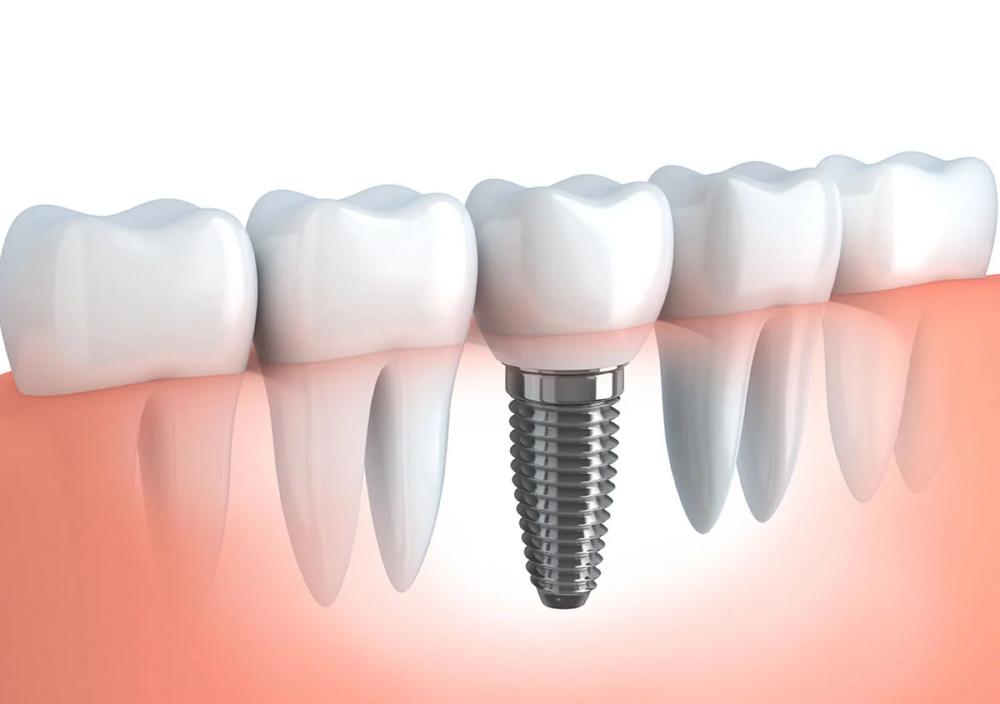
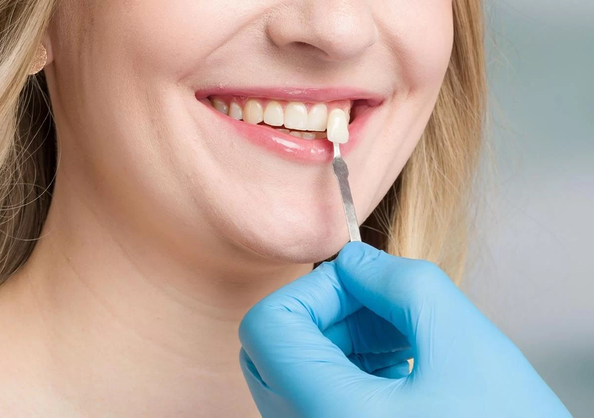
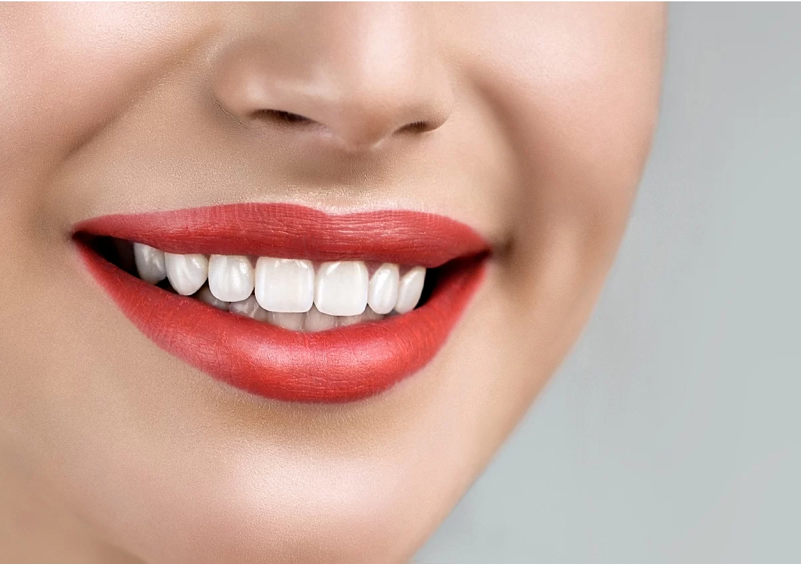
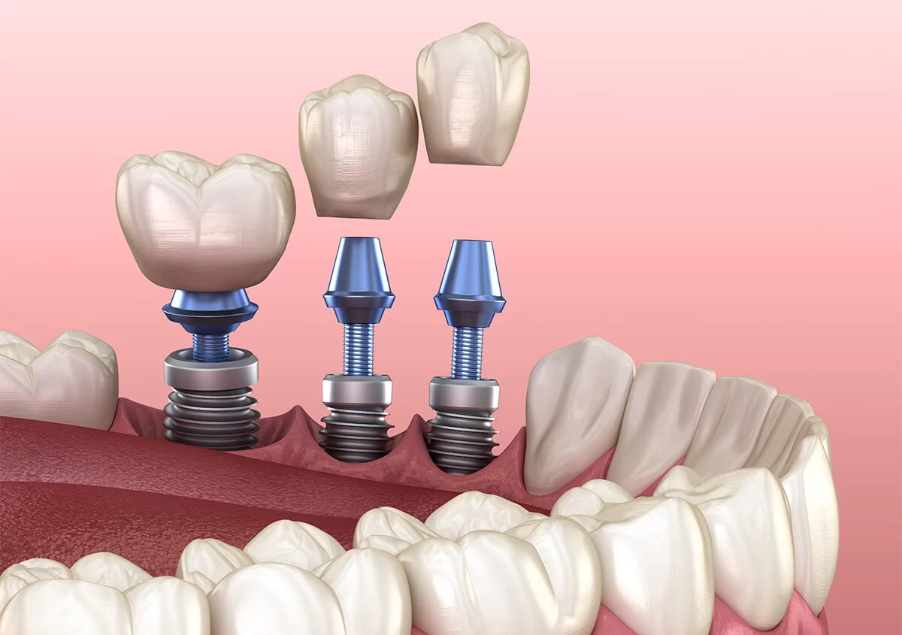

July 5, 2026
Maintaining Dental Implants: 5 Tips for Long-Term Success
Learn practical habits that support implant maintenance and help you protect your restored smile over time.
Continue readingWalden Dental · Austin, Texas
Explore practical reading from Walden Dental about implants, crowns, veneers, whitening, and everyday oral health.
These articles offer general education. Your dentist can help you understand what fits your health, goals, and next visit.
Recent articles
Choose a topic below to read the complete article on the Walden Dental website.

July 5, 2026
Learn practical habits that support implant maintenance and help you protect your restored smile over time.
Continue reading
May 27, 2026
See how digital planning and in-office technology can support a same-day crown visit when the tooth and treatment plan are a fit.
Continue reading
May 20, 2026
Explore the kinds of front-tooth concerns that may lead someone to ask about porcelain veneers.
Continue reading
October 10, 2025
Understand why people choose professional whitening and what to discuss before brightening a smile.
Continue reading
June 11, 2025
Prepare for an implant conversation by reviewing the questions, health factors, and planning details that matter.
Continue reading
June 11, 2025
Read about common cosmetic goals patients may discuss when considering veneers for visible front teeth.
Continue reading
June 9, 2025
Explore ways missing-tooth replacement may support daily function and confidence, depending on individual needs.
Continue reading
June 6, 2025
Compare practical reasons someone might ask whether implants belong in a missing-tooth treatment plan.
Continue reading
June 5, 2025
Review cosmetic dentistry options that can address different smile goals after an individual consultation.
Continue readingKeep exploring
See how other patients describe their experience, browse dental videos, or explore the services Walden Dental offers in Austin.
Have a question?
General reading is a useful start. A conversation can help you understand what is relevant to your own smile.